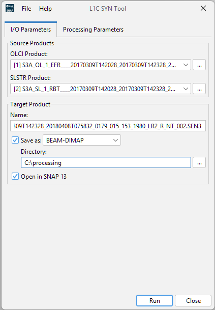
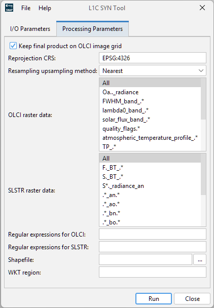

| S3 L1C SYN Tool - Tool Description |
|

Select an OLCI product on which the SLSTR product will be collocated.
SLSTR ProductSelect a SLSTR product which will be collocated with the OLCI product.
Both products must be taken at the same time (roughly). The start and stop time are validated and an error
is shown if the products do not match in the time domain.
By default a name with the prefix S3(A|B)_SY_1_SYN_ will be suggested. Following start and stop time and the current time.
Save as:Checkbox to specify whether the target product should be saved to the file system. The combo box presents a list of available file formats. The text field or the button next to it allow to specify a target directory.
If this parameter is set to "true" then no reprojection will be performed after co-registration and the L1C target product will be stored in the same image grid as the OLCI L1B source product. In this case value from Reprojection CRS option will not be used. 'True' is default value.
Coordinate reference system to which L1C product will be reprojected. If set to "none" or left empty, no reprojection will be performed. Default value is EPSG:4326 [1]. If user set "Keep final project on OLCI image grid" parameter to true, this option will ignored.
The method used for upsampling SLSTR bands to a common 500m resolution.
Predefined regular expressions for selection of OLCI bands in L1C product. Multiple values selection is possible.
Values must be one of 'All', 'Oa.._radiance', 'FWHM_band_.*', 'lambda0_band_.*', 'solar_flux_band_.*',
'quality_flags.*', 'atmospheric_temperature_profile_.*', 'TP_.*', 'horizontal_wind.*', 'total_.*', 'humidity',
'sea_level_pressure', 'O.*A', 'S.*A'.
If 'All' is selected then all OLCI bands will be written to L1C product. 'All' is the default value.
Predefined regular expressions for selection of SLSTR bands in L1C product. Multiple values selection is possible.
Values must be one of 'All', 'F._BT_.*', 'S._BT_.*', 'S*._radiance_an', '.*_an.*', '.*_ao.*', '.*_bn.*',
'.*_bo.*', '.*_co.*', '.*_cn.*', '.*_fn.*', '.*_fo.*', '.*_tn.*', '.*_tx.*'.
If 'All' is selected then all SLSTR bands will be written to L1C product. 'All' is the default value.
Regular expressions for selection of OLCI bands in L1C product. Values must follow JAVA rules for the regular expessions [2]. Values must be separated by commas. If 'All' is specified then all OLCI bands will be written to L1C product.
Regular expressions for selection of SLSTR bands in L1C product. Values must follow JAVA rules for the regular expressions [2]. Values must be separated by commas. If 'All' is specified then all SLSTR bands will be written to L1C product.
Optional shapefile which user can specify to create regional subsets. The subset is created after the coregistration and reprojection step. CRS of the shapefile must be WGS84. This option has priority over "WKT region" option.
The subset region in geographical coordinates using WKT-format, e.g. POLYGON((<lon1> <lat1>, <lon2> <lat2>, ..., <lon1> <lat1>)) (make sure to quote the option due to spaces in <geometry>). If not given, the entire scene is used. The subset is created after the coregistration and reprojection step. Shapefile option has priority over this option.